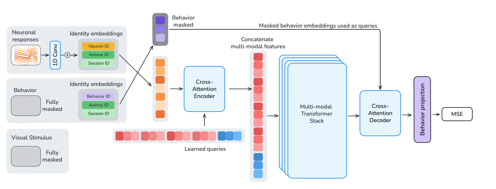
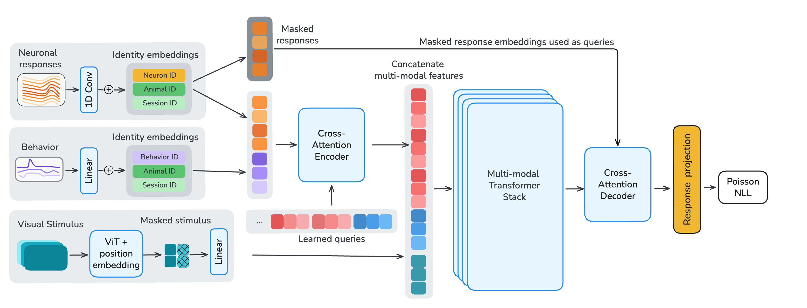

- Overview
- Neural Response Masking
- Behavior Masking
- Visual Stimulus Masking



Scaling data and models has transformed AI. Does the same hold for brain modeling? We train multi-modal, multi-task models on 3.1 million neurons from 73 mice (150B+ neural tokens), flexibly supporting neural prediction, behavioral decoding, and neural forecasting. OmniMouse achieves state-of-the-art performance, outperforming specialized baselines across virtually all regimes. Yet performance scales with more data while gains from larger models saturate – inverting the standard AI scaling story: brain models remain data-limited even with vast recordings.
Scaling data and models has driven the AI revolution. Large language models, vision transformers, and multi-modal systems all follow a simple recipe: more data and more parameters yield better performance. But does the same hold for modeling the brain?
The mouse visual cortex offers a natural testbed. Large-scale neural datasets now exist, standardized benchmarks are in place, and the system is well-characterized. Yet compared to internet-scale corpora, neural data remains small, fragmented, and expensive to collect. Prior models have been restricted to single modalities, single tasks, or single sessions — making it impossible to study scaling systematically.
We set out to change this. OmniMouse is the first model to unify neural prediction, behavioral decoding, and neural forecasting in a single architecture — trained on one of the largest single-neuron datasets ever assembled.


OmniMouse is a multi-modal, multi-task transformer that processes three streams of information simultaneously: single-neuron calcium traces from visual cortex, video stimuli shown to the mouse, and behavioral variables (gaze, pupil size, running speed).
Each neuron's activity is tokenized individually via strided 1D convolutions and augmented with learned identity embeddings for neuron, session, and animal. Video frames are encoded with a Hiera vision transformer. Behavioral traces are projected through a shared linear layer with channel-specific embeddings.
The architecture follows an encode–fuse–decode design. A cross-attention encoder compresses variable-length neural and behavioral tokens into a fixed-length latent sequence. A multi-modal fusion stack integrates these latents with video features via sliding-window and global self-attention layers. A shared cross-attention decoder then reconstructs target neural responses and behavioral traces.
The key design choice is flexible masking. We train with 119 structured masking configurations, enabling the model to handle any combination of forecasting, stimulus-conditioned prediction, sub-population prediction, and behavioral decoding — all within a single model.

We compiled one of the largest single-neuron datasets to date: 3.1 million neurons from the visual cortex of 73 mice across 323 recording sessions, totaling over 150 billion neural tokens. The mice viewed naturalistic movies, ImageNet images, and parametric stimuli (Gabors, random dot kinematograms, pink noise) while running on a wheel. Behavioral variables — pupil position, pupil dilation, and running speed — were recorded simultaneously.
State-of-the-art performance. OmniMouse outperforms all specialized baselines across virtually all evaluation regimes — including neural forecasting, population prediction, stimulus encoding, and behavioral decoding. Crucially, these gains hold even in data-matched comparisons where OmniMouse and baselines train on identical data. The architecture itself provides an advantage, independent of data scale.
Model scaling saturates. We trained models from 1M to 300M parameters on all 323 sessions. Performance improved up to ~80M parameters, then plateaued. Larger models showed no further gains for neural prediction, indicating that current brain models are not compute- or parameter-limited.

Data scaling works. In contrast, scaling data consistently improves performance. We trained models on nested collections of 8, 16, 32, 64, and 323 sessions. Across all tasks and model sizes, more data meant better predictions — with no sign of saturation. Larger models benefited disproportionately from additional data, and the performance gap between model sizes widened as datasets grew.
Behavior decoding scales the most. Among all tasks, behavioral decoding showed the most promising scaling dynamics. Performance improved smoothly with both model size and data, reminiscent of classic scaling-law behavior in language models. This task had not yet saturated even at the largest scale tested.

An inverted scaling story. This inverts the standard AI narrative. In language and vision, massive datasets make parameter scaling the primary driver of progress. In brain modeling — even in the mouse visual cortex, a relatively simple system — models remain data-limited despite vast recordings. The bottleneck is not compute. It is data.
OmniMouse demonstrates that a single unified model can match or exceed specialized methods across neural prediction, forecasting, and behavioral decoding. Scaling analysis reveals a clear message: brain models need more data, not bigger architectures. Performance scales reliably with dataset size, but gains from increasing model parameters saturate early.
This finding has practical implications. If brain models are to become foundation models for neuroscience, the field must invest in richer, more diverse experiments — more stimuli, more tasks, more behavioral paradigms. In language modeling, seemingly small improvements from scaling unlocked phase transitions to qualitatively new capabilities. By analogy, richer neural data may similarly unlock new capabilities in brain models, revealing deeper principles of neural computation.
Results in bold indicate the best score per task in either the data-matched condition (8 sessions, top) or when using the full dataset (323 sessions, bottom).
× Model does not natively support this task
If you find this work useful for your research, please cite our paper:
@inproceedings{
willeke2026omnimouse,
title={OmniMouse: Scaling properties of multi-modal, multi-task Brain Models on 150B Neural Tokens},
author={Konstantin Friedrich Willeke and Polina Turishcheva and Alex Gilbert and Goirik Chakrabarty and Hasan Atakan Bedel and Paul G. Fahey and Yongrong Qiu and Marissa A. Weis and Michaela Vystr{\v{c}}ilov{\'a} and Taliah Muhammad and Lydia Ntanavara and Rachel E Froebe and Kayla Ponder and Zheng Huan Tan and Emin Orhan and Erick Cobos and Sophia Sanborn and Katrin Franke and Fabian H. Sinz and Alexander S. Ecker and Andreas S. Tolias},
booktitle={The Fourteenth International Conference on Learning Representations},
year={2026},
url={https://openreview.net/forum?id=mEw4lhAn0F}
}